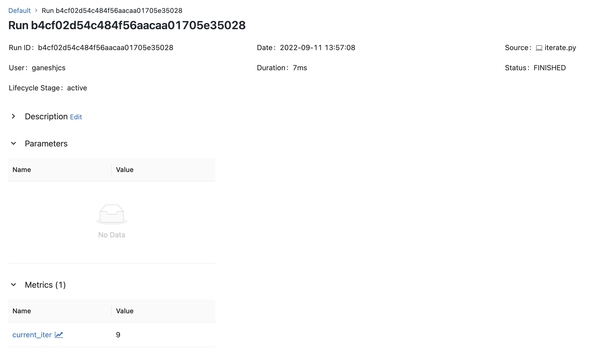
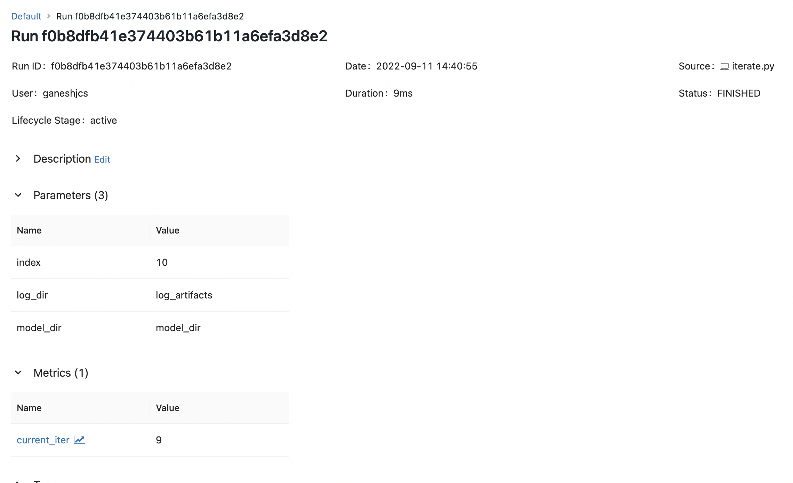
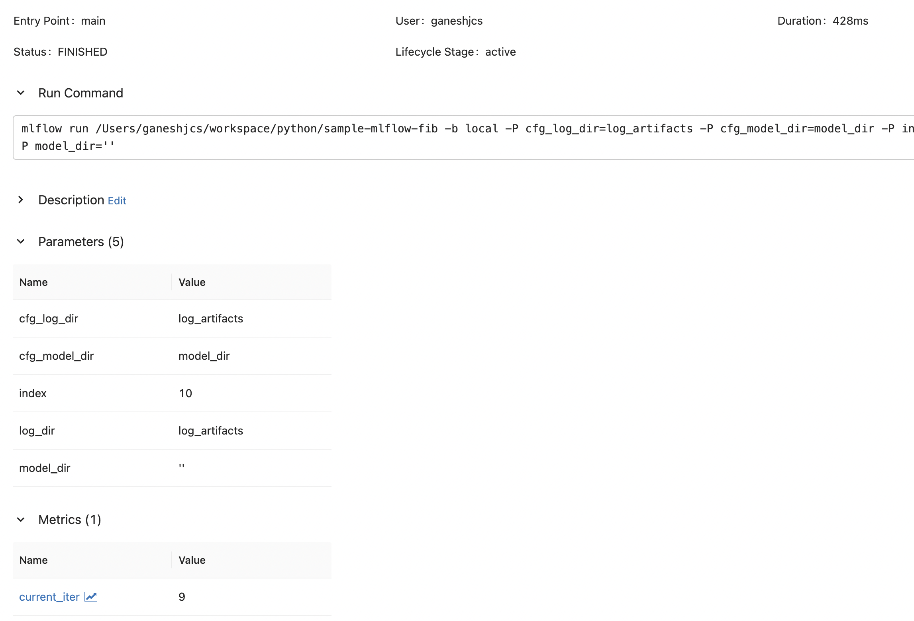
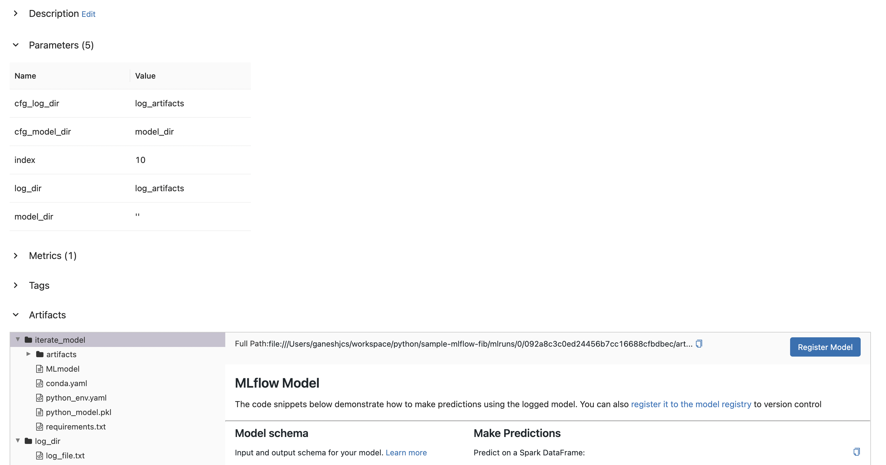

I have been using Mlflow for a while now to track experimentation and model artifact lineage. While setting up codebases to use mlflow, I had to make some design decisions that influenced the successful logging of all metrics, parameters, artifacts, and the addition of the model artifacts to the model registry.
Broadly, these were:
- The intended pattern to run projects
- Logging artifacts the right way
I wanted to draw out a few of these by adding mlflow logging to a small script. Some of these choices become gotchas while working with large codebases that have long data loading and training periods. Depending on the task and the compute being used, these gotchas could be expensive.
Pre-requisites
Let’s start with a function that doesn’t do any machine learning, it simply takes in a parameter (an integer index) and iterates upto that number while printing the numbers to a file.
def iter_and_log(index: int, log_file: Path):
with open(log_file, "w") as lf:
for i in range(index):
lf.write(f"{i}\n")A commonly followed pattern in machine learning / deep learning training code is:
- Accept parameters from cli using packages like
argparseorclick. - Create some artifacts (our log file here is an artifact that we can use)
- After performing training (also during), save the model.
For the purpose of our example, let’s mimic this pattern by doing the following:
## iterate.py
import click
from pathlib import Path
import pickle
@click.command()
@click.option(
"--index",
"-i",
type=click.INT,
help="Upper limit for iteration",
)
@click.option(
"--log-dir",
"-L",
type=click.Path(),
default=Path("log_artifacts"),
help="Log artifact file path"
)
@click.option(
"--model-dir",
"-M",
type=click.Path(),
default=Path("model_dir"),
help="'Model' directory"
)
def iterate(index: int, log_dir: Path, model_dir: Path) -> None:
# ensure log_dir and model_dir are Path objects
log_dir = Path(log_dir)
model_dir = Path(model_dir)
## Create dirs if they don't exist
if not log_dir.exists(): log_dir.mkdir()
if not model_dir.exists(): model_dir.mkdir()
# set log_file path
artifact_file = log_dir / "log_file.txt"
# perform iteration and logging
iter_and_log(index, artifact_file)
# serialize and save the function that does serialization and logging
# this is our proxy for a model
with open(model_dir / "model_pickle", "wb") as model_file:
pickle.dump(iter_and_log, model_file)
def iter_and_log(index: int, log_file: Path) -> None:
"""Function that does the iteration and logging
Iterates to `index` and logs the values to `log_file`
"""
with open(log_file, "w") as lf:
for i in range(index):
lf.write(f"{i}\n")
if __name__ == "__main__":
iterate()This can be run for 10 iterations as follows
python iterate.py -i 10and it will create the artifact directories, iterate and log, and then serialize and dump the function to file.
Now, with the pre-requisits done, let’s talk about adding mlflow logging and running the project.
The Intended Pattern to Run Projects
A project that has mlflow logging can be run using two patterns
Using the python command
- In this pattern, the project is run as it would be normally i.e. its python command or bash script. In our example that would be
python iterate.py -i 10.
- When logging is done this way, mlflow runs in Fluent API mode.
- In this pattern, the project is run as it would be normally i.e. its python command or bash script. In our example that would be
-
- In this pattern, an MLproject file gets defined at the project’s root directory.
- To run the project, the
mlflow runcommand is used to run an entry point and the command to be used is defined within the entry point.
- In this pattern, an MLproject file gets defined at the project’s root directory.
Adding logging to the codebase such that both of these patterns can be supported is often tricky! Let’s add logging to our script and see why. The first step is adding the MLproject file:
## MLproject
name: sample-mlflow-iterate
entry_points:
main:
parameters:
index: int
log_dir:
default: log_artifacts
model_dir:
default: model_dir
command: python iterate.py -i {index} --log-dir {log_dir} --model-dir {model_dir}Once, the file has been added to the project root, we can use mlflow cli to run the project as
mlflow run . -P index=10 --env-manager=localwhere -P is how a parameter is specified while running and --env-manager=local is to tell mlflow to use the local environment.
Circling back, our project that will use mlflow logging, is able to run in two ways:
1. Using the python command python iterate.py -i 10, in which case mlflow will run as Fluent API.
2. Using the Mlproject file and mlflow cli as mlflow run . -P index=10 --env-manager=local.
Now, let’s add logging and see the gotchas depending on how we run the projects.
Starting a run and logging metrics
To start logging to a run, an mlflow run has to be started in the code. We can do that using mlflow.start_run() either as a context using the with keyword or by itself. The documentation for this function does it using the with keyword - which also takes care of ending the run. But in many codebases (eg. huggingface transformers) encapsulating the entire logging process inside of one context is not possible, and therefore mlflow.start_run() is used by itself quite often. When we do that, we also need to take care that we end the run using mlflow.end_run().
Our script is small, so let’s use the with keyword:
def iterate(index: int, log_dir: Path, model_dir: Path) -> None:
# ensure log_dir and model_dir are Path objects
log_dir = Path(log_dir)
model_dir = Path(model_dir)
## Create dirs if they don't exist
if not log_dir.exists(): log_dir.mkdir()
if not model_dir.exists(): model_dir.mkdir()
# set log_file path
artifact_file = log_dir / "log_file.txt"
# start mlflow run
with mlflow.start_run():
# perform iteration and logging
iter_and_log(index, artifact_file)
# serialize and save the function that does serialization and logging
# this is our proxy for a model
with open(model_dir / "model_pickle", "wb") as model_file:
pickle.dump(iter_and_log, model_file)and to log some metrics, we can use mlflow.log_metric() function within the iter_and_log function as follows:
def iter_and_log(index: int, log_file: Path) -> None:
"""Function that does the iteration and logging
Iterates to `index` and logs the values to `log_file`
"""
with open(log_file, "w") as lf:
for i in range(index):
# log to mlflow
mlflow.log_metric(
key="current_iter",
value=i,
step=i # Don't forget to add step, absence makes all logs to step 0
)
lf.write(f"{i}\n")Now when we run this project using mlflow run, we can see that mlflow logs the input parameters (specified in MLproject) and the metrics as we intended. ")
But when we run the same using the python command, we see that the parameters are not logged. 
Fixing that should be as easy as using mlflow.log_param() in the code, right? In this script - yes. Let’s add that before we talk about where that could be insufficient. We can modify the iterate function to add parameter logging.
def iterate(index: int, log_dir: Path, model_dir: Path) -> None:
# ensure log_dir and model_dir are Path objects
log_dir = Path(log_dir)
model_dir = Path(model_dir)
## Create dirs if they don't exist
if not log_dir.exists(): log_dir.mkdir()
if not model_dir.exists(): model_dir.mkdir()
# set log_file path
artifact_file = log_dir / "log_file.txt"
# start mlflow run
with mlflow.start_run():
# Log parameters
mlflow.log_param(key="index", value=index)
mlflow.log_param(key="log_dir", value=str(log_dir))
mlflow.log_param(key="model_dir", value=str(model_dir))
# perform iteration and logging
iter_and_log(index, artifact_file)
# serialize and save the function that does serialization and logging
# this is our proxy for a model
with open(model_dir / "model_pickle", "wb") as model_file:
pickle.dump(iter_and_log, model_file)and with this we can run the script using the python command and even the parameters will be logged. 
Reasonable defaults and logging parameters
In Mlflow, the intended use for logging parameters seems to be only for the purpose of capturing initial parameters and hyperparameters. Unlike metric logging, the parameter logging functions don’t have a step parameter to capture parameter values as they change. There is also no way to update a subset of parameters which is possible in some other logging libraries such as Weights and Biases. In mlflow, (hyper)parameters that change over time should be logged as metrics (if they are numeric) or to a nested run as recommended by the package.
But a common practice in many codebases is to set reasonable defaults and rely on those to be used when an empty string or a null value is passed as an initial parameter. Codebases such as fairseq have dozens of parameters and it’s not realistic to assume that a user would set them all when running the code. Likewise, it’s not realistic to assume that a user would write them all in the MLproject file. A more realistic assumption is that the user would specify some of the parameters and rely on the default values for the remaining.
Let’s mimic this pattern in our script and see what happens.
First we modify our iterate function as
def iterate(index: int, log_dir: Path, model_dir: Path) -> None:
## set reasonable defaults
if log_dir is None or str(log_dir).strip() == "": log_dir = Path("log_artifacts")
if model_dir is None or str(model_dir).strip() == "": model_dir = Path("model_dir")
# ensure log_dir and model_dir are Path objects
log_dir = Path(log_dir)
model_dir = Path(model_dir)
## Create dirs if they don't exist
if not log_dir.exists(): log_dir.mkdir()
if not model_dir.exists(): model_dir.mkdir()
# set log_file path
artifact_file = log_dir / "log_file.txt"
# start mlflow run
with mlflow.start_run():
# perform iteration and logging
iter_and_log(index, artifact_file)
# serialize and save the function that does serialization and logging
# this is our proxy for a model
with open(model_dir / "model_pickle", "wb") as model_file:
pickle.dump(iter_and_log, model_file)We know that this already works using the python command because we have been using the defaults specified using click. But in the MLproject file, we have specified all the parameters with their defaults. Let’s modify it to get the code to rely on default values.
## MLproject
name: sample-mlflow-iterate
entry_points:
main:
parameters:
index: int
model_dir:
default: null
command: python iterate.py -i {index} --model-dir {model_dir}I modified the MLproject file to remove log_dir altogether and set model_dir to null. When we now run this code using mlflow run . -P index=10 --env-manager=local, turns out it is not allowed:
2022/09/11 18:33:40 ERROR mlflow.cli: === No value given for missing parameters: 'model_dir' ===We cannot set parameters to null. This means, if a codebase requires some parameter be set to None to get the code to use a default values, leave it out of the MLproject file. This might actually be impossible in many codebases and should be taken under consideration when deciding to support running the project using the MLproject file.
Luckily, our script also replaces an empty string with defaults. Therefore, we should be able to modify the MLproject file and set model_dir to ''.
## MLproject
name: sample-mlflow-iterate
entry_points:
main:
parameters:
index: int
model_dir:
default: ""
command: python iterate.py -i {index} --model-dir {model_dir}When we now run this, we still run into an error:
mlflow.exceptions.MlflowException: Changing param values is not allowed. \
Param with key='model_dir' was already logged with \
value='''' for run ID='7e8922428cf5464582b6f44fb3a183ab'. \
Attempted logging new value 'model_dir'.This is because model_dir was already logged from MLProject file and so when we log the value we finally use, it raises the error to indicate that updating a parameter is not allowed.
In my opinion, there is no ideal way to fix this. I dislike the idea of logging this value to a nested run, since there is no need. The parameter did not evolve over time to trigger a search in a new hyperparameter space, this is just getting the code to use a default value. But here are a few possible ways to address this:
1. Ignore logging the parameters that have already been logged
Here is some code that could do that assuming the parameters have been specified as a dictionary in the code:
from mlflow.tracking import MlflowClient
run_id = mlflow.active_run().info.run_id # get run_id of active run
run = self.client.get_run(run_id=self.run_id) # get current run data
logged_params = run.data.params # get already logged params as a dict
for k, v in params_dict.items():
if k not in logged_params:
mlflow.log_param(key=k, value=str(v))2. Use different names for parameters and the command line arguments
This allows both, command line arguments that are initial parameters, as well as the values that actually get used to be logged. Example: Fairseq uses the command line arguments to set the configs that are actually used in code. It also provides the cli args as part of the cfg variable, and so when logging parameters using mlflow for fairseq, (1) should also be used.
Let’s use both of these and modify our iterate:
def iterate(index: int, log_dir: Path, model_dir: Path) -> None:
if log_dir is None or str(log_dir).strip() == "":
cfg_log_dir = Path("log_artifacts")
else:
cfg_log_dir = Path(log_dir)
if model_dir is None or str(model_dir).strip() == "":
cfg_model_dir = Path("model_dir")
else:
cfg_model_dir = Path(model_dir)
if not cfg_log_dir.exists(): cfg_log_dir.mkdir()
if not cfg_model_dir.exists(): cfg_model_dir.mkdir()
artifact_file = cfg_log_dir / "log_file.txt"
with mlflow.start_run() as run:
# Fetch run information
run_id = run.info.run_id
run = MlflowClient().get_run(run_id=run_id)
logged_params = run.data.params
# Set param dict
params_dict = {
"index": index,
"log_dir": str(log_dir),
"model_dir": str(model_dir),
"cfg_log_dir": str(cfg_log_dir),
"cfg_model_dir": str(cfg_model_dir)
}
# Log if not already logged
for k, v in params_dict.items():
if k not in logged_params:
mlflow.log_param(key=k, value=str(v))
# iterate and log
iter_and_log(index, artifact_file)
# binarize and save model
with open(cfg_model_dir / "model_pickle", "wb") as model_file:
pickle.dump(iter_and_log, model_file)With this, we can successfully log parameters using both
mlflow runpython iterate.py from MLproject and the logged metric (current_iter)")
Notice that there is a difference in the value for model_dir between mlflow run and python iterate.py, but the correct value can be reliably checked from cfg_model_dir.
Logging Artifacts the Right Way
With metrics and parameters logged, let’s turn our attention to artifact logging. Mlflow provides the methods mlflow.log_artifact and mlflow.log_artifacts to log files and directories respectively. In our code, we create two artifacts: log_file.txt and the binarized function model_pickle (which is also our proxy for a model artifact that we’d like to save and version).
If the intended purpose was to log and preserve artifacts of a run, then an instinctive way is to just log everything as an artifact. We can modify iterate.py to do that
def iterate(index: int, log_dir: Path, model_dir: Path) -> None:
if log_dir is None or str(log_dir).strip() == "":
cfg_log_dir = Path("log_artifacts")
else:
cfg_log_dir = Path(log_dir)
if model_dir is None or str(model_dir).strip() == "":
cfg_model_dir = Path("model_dir")
else:
cfg_model_dir = Path(model_dir)
if not cfg_log_dir.exists(): cfg_log_dir.mkdir()
if not cfg_model_dir.exists(): cfg_model_dir.mkdir()
artifact_file = cfg_log_dir / "log_file.txt"
with mlflow.start_run() as run:
# Fetch run information
run_id = run.info.run_id
run = MlflowClient().get_run(run_id=run_id)
logged_params = run.data.params
# Set param dict
params_dict = {
"index": index,
"log_dir": str(log_dir),
"model_dir": str(model_dir),
"cfg_log_dir": str(cfg_log_dir),
"cfg_model_dir": str(cfg_model_dir)
}
# Log if not already logged
for k, v in params_dict.items():
if k not in logged_params:
mlflow.log_param(key=k, value=str(v))
# iterate and log
iter_and_log(index, artifact_file)
# log cfg_log_dir as artifact
mlflow.log_artifacts(str(cfg_log_dir), "log_dir")
# binarize and save model
with open(cfg_model_dir / "model_pickle", "wb") as model_file:
pickle.dump(iter_and_log, model_file)
# log cfg_model_dir as artifact
mlflow.log_artifacts(str(cfg_model_dir), "model_dir")
But if the intention is to version the model, the model artifact has to be logged as an mlflow model. To do that we would have to log models using a supported method which can get tricky - it has to be one of the supported methods, and it assumes access to the model itself. Sometimes, especially when working with open-source deep learning libraries (eg. Fairseq, Yolov5) the native logging methods don’t expose the models themselves but provide means to fetch the location of the saved models.
In such cases, a solution might be to load the model again just to log it to mlflow in a form that can be registered. Depending on the model, this could punish the compute and memory.
An alternative, that was recently implemented in huggingface by Swetha Mandava, is to use mlflow.pyfunc to log any model with a pyfunc interface.
We can use this to change iterate
def iterate(index: int, log_dir: Path, model_dir: Path) -> None:
if log_dir is None or str(log_dir).strip() == "":
cfg_log_dir = Path("log_artifacts")
else:
cfg_log_dir = Path(log_dir)
if model_dir is None or str(model_dir).strip() == "":
cfg_model_dir = Path("model_dir")
else:
cfg_model_dir = Path(model_dir)
if not cfg_log_dir.exists(): cfg_log_dir.mkdir()
if not cfg_model_dir.exists(): cfg_model_dir.mkdir()
artifact_file = cfg_log_dir / "log_file.txt"
with mlflow.start_run() as run:
# Fetch run information
run_id = run.info.run_id
run = MlflowClient().get_run(run_id=run_id)
logged_params = run.data.params
# Set param dict
params_dict = {
"index": index,
"log_dir": str(log_dir),
"model_dir": str(model_dir),
"cfg_log_dir": str(cfg_log_dir),
"cfg_model_dir": str(cfg_model_dir)
}
# Log if not already logged
for k, v in params_dict.items():
if k not in logged_params:
mlflow.log_param(key=k, value=str(v))
# iterate and log
iter_and_log(index, artifact_file)
# log cfg_log_dir as artifact
mlflow.log_artifacts(str(cfg_log_dir), "log_dir")
# binarize and save model
with open(cfg_model_dir / "model_pickle", "wb") as model_file:
pickle.dump(iter_and_log, model_file)
# log as mlflow model that can be registered
mlflow.pyfunc.log_model(
artifact_path="iterate_model",
artifacts={
"model_dir": str(cfg_model_dir)
},
python_model=mlflow.pyfunc.PythonModel()
)Now, when this script is run, log.txt is logged as an artifact and the binarized function is logged as a model that can be registered. 
Final Thoughts and Conclusion
These were some of the tricky parts that I encountered while implementing mlflow logging in few codebases. Another quick tip is to use artifact folders with epochs to log multiple artifacts or models that can be individually registered, but I’ll save elaboration on that for a future post.
A question I found myself asking very often was “do I need to support both fluent API as well as MLproject”? The following influences my thoughts on it.
Hamel Husain, in his talk about evaluating ML Tooling, mentions that good tooling should have as little Domain Specific Language (DSL) as possible. And the MLproject file, while it has it’s uses, is definitely DSL. It is a file that is used only for the purpose of interacting with mlflow cli and it forces users to learn how to specify the file in addition to already learning to use the mlflow python package.
That being said, my instinct as a maintainer is to enable usage while also respecting my time. Therefore, while it could be slightly more tedious to enable support for both patterns of running mlflow logging, it could also be worth the extra effort if the codebase could benefit users interacting with it using mlflow.
- The best reason to support fluent API is because it is more natural and requires the user to learn less.
- Few great reasons to support MLproject and
mlflow clibased logging are:- If the user is a databricks user, the CLI enables use of infrastructure.
- MLproject file can be used to orchestrate workflows.
- If the user is a databricks user, the CLI enables use of infrastructure.